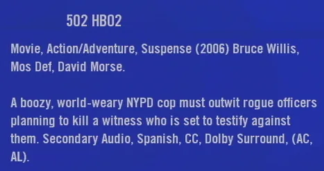
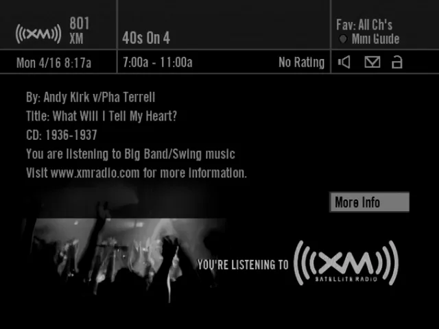
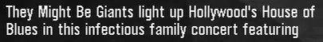
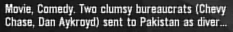
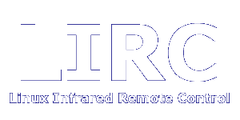

DirecTV Projects
Contract consulting · 2007 – 2012
- redrat_scripter: red rat code for infrared transceiver, usb, perl client that reads scripts and sends commands to server that uses sockets
- redrat_blaster: used in server farm to blast with random IR messages to discover software errors
- USB Device Driver: Modified to minimize memory usage and avoid excess of object recreation
- ScreenCapture Control: ActiveX control to capture screens using various devices, creates images
- Image Processing Code: binarize images, crop selected window
- ScreenReader: Perform OCR on selected window
- ScreenScraper: Perform OCR on a whole screen
- AbbyReader OCR Instrumentation System, used by Server
- OCR Server: Uses Abby Reader System, receives an image as input, performs OCR on it and returns text to the client, over TCP/IP Network.
- OCR Server Tester: Performs various tests on the server.
- OCR Client: Takes video screen shots with ScreenCapture, does some image processing, including adapted FFT algorithm, binarizes image, sends image to server, receives text, client is instrumented via javascript, usually from Test Director Web App.
- OCR Client Blaster: Performance tester for OCR System.
Work Performed
Envisioned, promoted, architected, designed and developed software infrastructure for Automation system in C++, ActiveX, COM and Win32. The Client/Server system uses ACE Framework design and architecture patterns and drives video capture devices to acquire and process images, perform OCR and recognition of other artifacts using the Fast Fourier Transform algorithm and other methods in Machine Vision.
Invented algorithms using kernel methods and decision trees for analysis of image data and comparison for recognition. This was done in an incredible short time working independently, this took one month of research and implementation.
Envisioned, promoted, designed and developed Linux Socket C++ Server and Perl Client script processing Automation application for driving libusb based RedRat infrared Transceiver concurrent multiple devices. A RedRat is a device that can read and replicate remote control signals. ANSI C, C++, OOP, Patterns, Image Processing, JavaScript, Test Director, Visual Studio, DirectX, USB Devices.
Applications and ActiveX controls were used from Test Directors and instrumented using javascript.
From the project archive
The original project archive holds 10 source files (C++, C) and 5 notes. They are not published here because they belong to DirecTV; I’m happy to walk through the design and code in an interview.
Screenshots





Interested in working together?